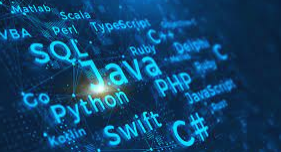
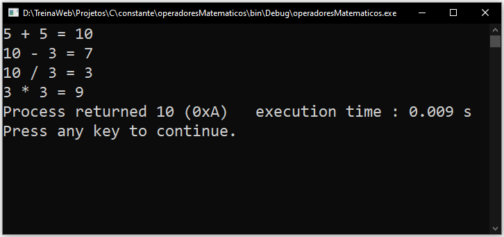

Desenvolvedor
Um programador é um profissional altamente capacitado e especializado em linguagens de programação e desenvolvimento de software.
Sua principal função é criar, projetar e implementar soluções digitais para uma variedade de necessidades e problemas.
onde iniciar
Linguagens

é uma linguagem escrita e formal que especifica um conjunto de instruções e regras usadas para gerar programas (software)
o ato de escrever e estruturar um conjunto de instruções (código) para que um computador ou sistema possa executar tarefas e
o que é uma linguagem
Como é utilizado a matematica na programação

Para além da relação entre o sistema decimal e binário, a programação pode incluir matemática também em suas linhas de código, através, por exemplo, das estruturas condicionais, de repetição e estruturas que comportam dados, como vetores e matrizes. Tudo isso se relaciona diretamente com a linguagem matemática.
calculadora